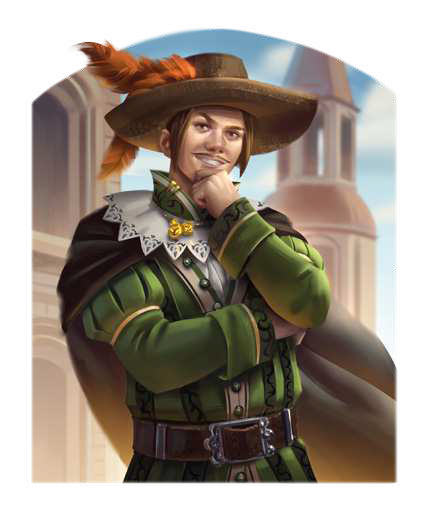

"Rahja hat uns mit Begierde und Leidenschaft gesegnet, meine Rose, damit wir ihr nachkommen. Der listige Phex aber hat uns die Nacht geschenkt, sodass wir Rahjas Willen ungestört und unerkannt frönen können."
In den Gassen von Vinsalt ist der charmante Frauenheld unter zahlreichen Aliasen bekannt: „Rimaldo“, „Alrigio“ oder sogar „Rahjacomo“ lüstert er seinen Auserwählten beim galanten Handkuss oder während eines Stelldicheins in Ohr. Unzählige Herzen soll er bereits gebrochen haben und seine notorischen Liebschaften bringen ihn ständig in Schwierigkeiten. Dennoch gibt er jeder Angebeteten das Gefühl, die einzige Liebe seines Lebens zu sein. Diskretion ist für ihn oberstes Gebot, denn nur so kann er sicherstellen, dass sein Kopf noch lange auf seinen breiten Schultern sitzt. Doch trotz allen Schweigens ist sein Ruf ebenso legendär wie berüchtigt und der versierte Fechter hat meist mehr ausstehende Duellforderungen gehörnter Ehemänner als Finger an den Händen. Ständig ist er daher auf der Flucht oder auf der Suche nach Sekundanten, oder besser noch nach Stellvertretern, die für ihn die Duelle fechten. Glücklicherweise schließt der wortgewandte Kleinadlige schnell Freundschaften und ist nie so knapp bei Kasse, dass er Freunden nicht einen Becher Wein ausgeben würde.
Volkes Stimme
- "Guter Mann, dem man bedingungslos vertrauen kann. Etwas leichtlebig vielleicht, aber rundum verlässlich. Und so gutaussehend!"
- "Niemand, der mit meiner Frau angebandelt hat, darf ungestraft davonkommen! Dieser eitle Geck! Wartet nur, bis ich meinen neuen Degen habe, dann erledige ich das selbst!"